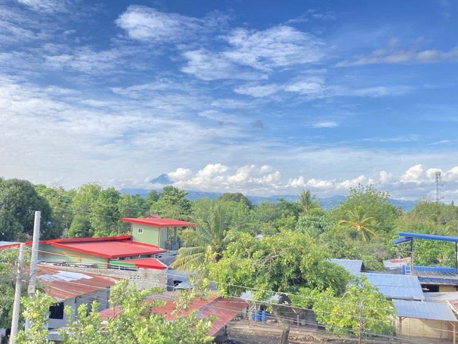
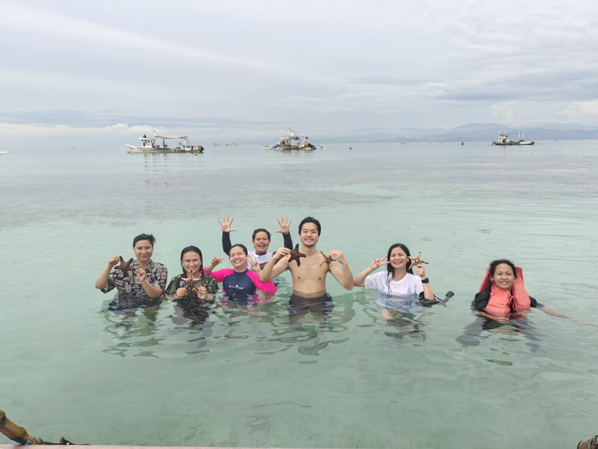
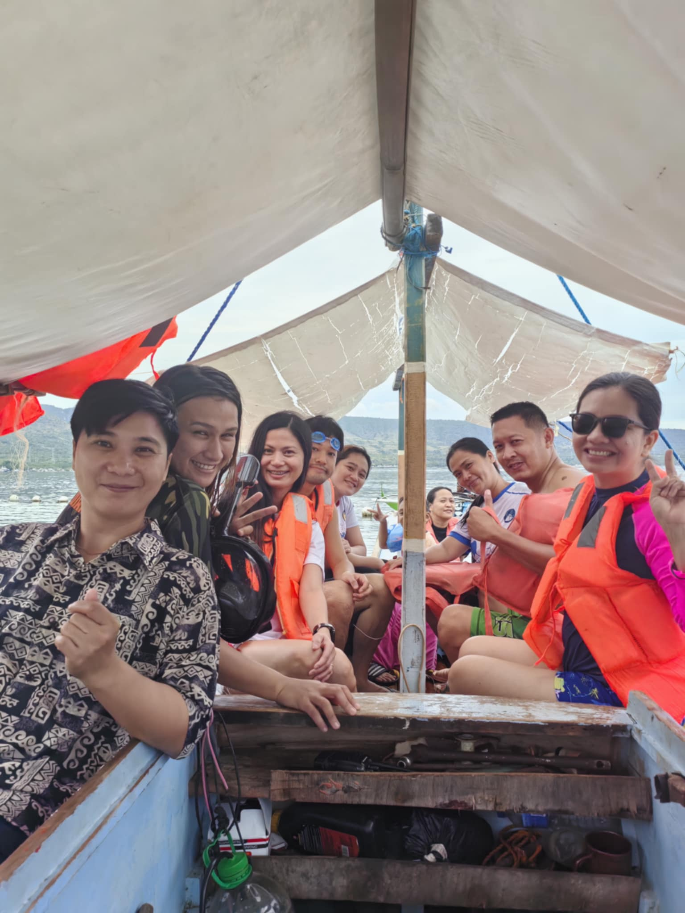
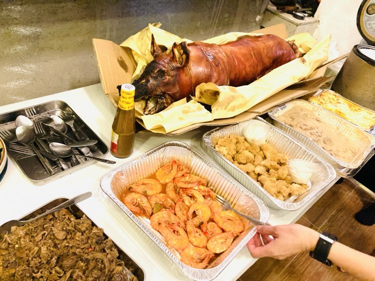
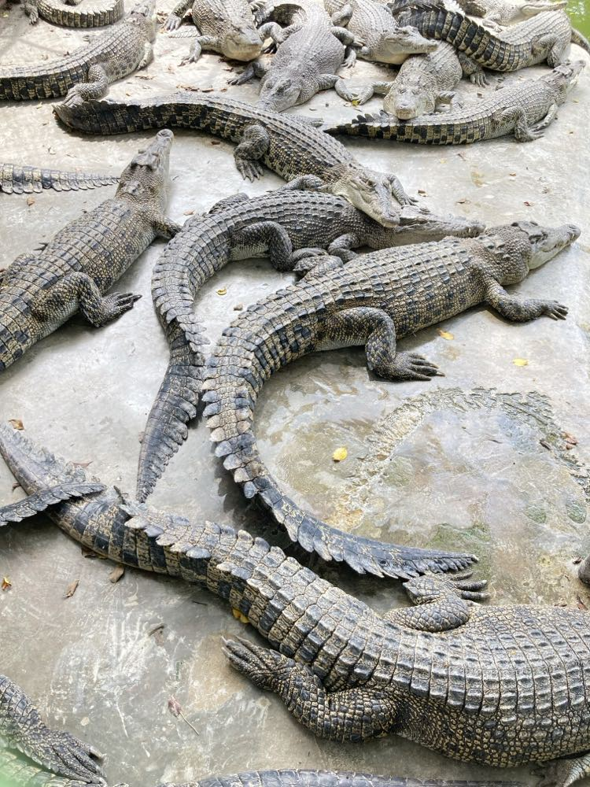
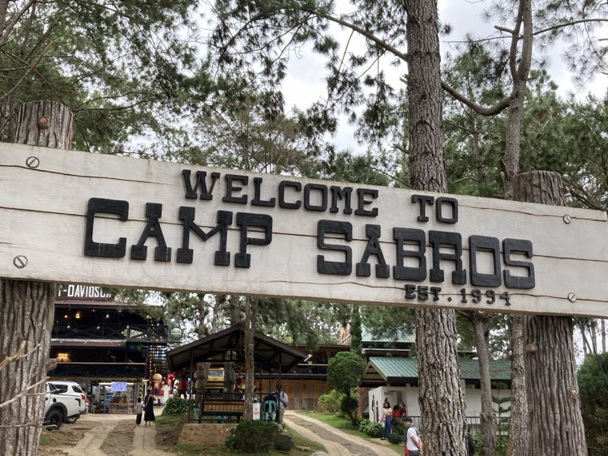
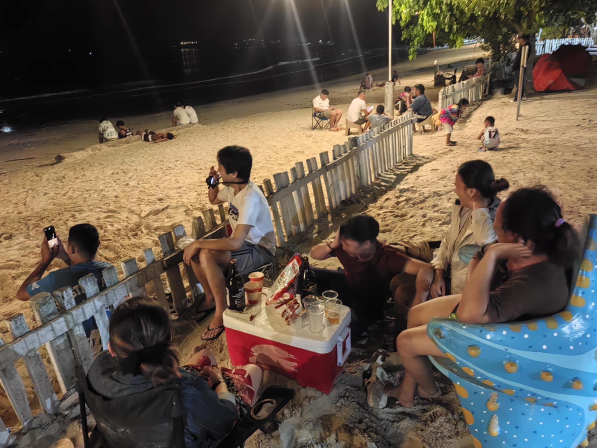
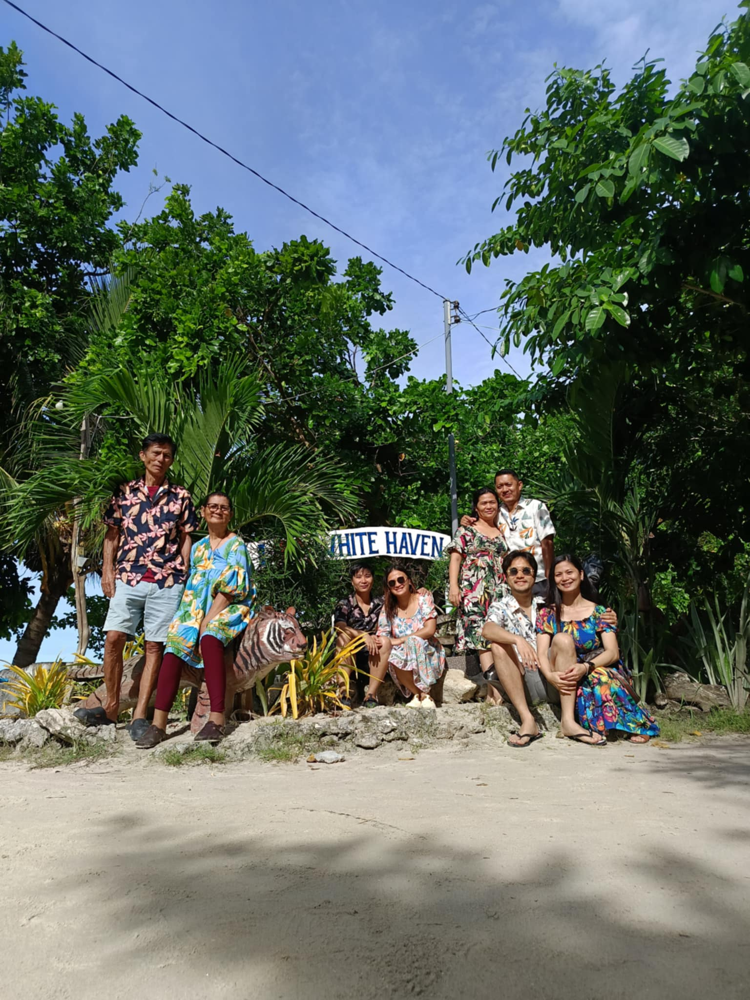

1日目：到着と再会のサプライズ
2024年12月23日、私は初めてフィリピン南部に位置するジェネラルサントスを訪れました。
この旅の目的は、彼女のご両親に挨拶をすることで、クリスマスを彼女の家族と共に過ごすためです。
セブから国内線で約1時間、空港に降り立つと南国特有の湿った熱気と鮮やかな陽光が肌を包み込みました。
彼女の友人が車で迎えに来てくれ、市内中心部まで約30分のドライブ。途中、広がる青空と緑豊かな景色が私を出迎えてくれました。

到着後すぐに、私たちはショッピングモールのレストランに向かいました。実はこの訪問は彼女の両親には秘密にしており、食事中にサプライズを計画していました。約3年ぶりの再会となった彼女とご両親の涙に満ちた抱擁は、目の前で見ている私にも感動を与えてくれました。
その後、カレカレやシニガンなどフィリピンの伝統料理をいただきながら、笑顔が絶えない夕食の時間を過ごしました。
夕食後は彼女の家族と友達とスーザンンズビーチのコテージで、彼女の家族や友人たちと夜を過ごしました。
2日目：スーザンズビーチでのボート体験
翌朝、目を覚ますと目の前には透き通る青い海と美しい砂浜が広がっていました。スーザンズビーチはその透明度の高さで知られ、波打ち際には小さな魚やヒトデが見られるほどです。砂浜を歩きながら海風を感じ、心身ともにリラックスしました。
さらに、この日はボートに乗り沖合まで出て、初めてのダイビングを体験しました。海中にはカラフルなサンゴ礁や熱帯魚が広がり、まるで別世界にいるかのような光景に感動しました。特に鮮やかな熱帯魚の群れが目の前を泳ぐ様子は、忘れられない思い出となりました。


海水浴を楽しんだ後は彼女の実家へと向かいました。日本の住宅とは異なり、フィリピン特有の可愛らしいデザインの家でした。夜には家族総出でクリスマスディナーが振る舞われ、レチョンと呼ばれる豚の丸焼きを初めて味わいました。香ばしい皮とジューシーな肉の味わいは格別で、クリスマスの特別感を一層引き立ててくれました。食後、屋上で眺めた打ち上げ花火と満点の星空は、心に深く刻まれた思い出です。

3日目：天然池とナイトマーケット
クリスマス当日、私たちはOlaer Swimming Resortという天然池へ出かけました。透明度の高い冷たい水は、周囲の緑と相まって自然の癒しを感じさせてくれます。岩場から飛び込むと、一瞬で心がリフレッシュされました。
夜はPaskong Pamilyaというナイトマーケットへ。地元の屋台やアトラクションが並び、射的や空中ブランコなどを楽しみました。フォトブースもあり、みんなで写真も撮りました。地元産のマンゴーを使ったスムージーは、甘さと酸味が絶妙で特に印象に残りました。マーケット全体の賑やかな雰囲気と、地元の人々の親しみやすさに心が温かくなりました。
4日目：ダバオへの小旅行
翌日、少し足を延ばしてダバオまでドライブしました。最初に訪れたクロコダイルパークでは、多種多様な動物たちと触れ合うことができました。


その後、Camp Sambrosに立ち寄り、ジップラインに挑戦。爽快な風を感じながら滑走する体験はスリル満点で、南国の自然を全身で楽しむことができました。

5日目：ショッピングとリゾートでの夜
最終日、ジェネラルサントス市内のKKショッピングモールで土産を購入しました。特にTakuyakiと呼ばれるタコが入っていないたこ焼きは、日本人として興味深く、ユニークな味わいを楽しみました。
夜はホワイトヘイブンビーチというリゾートで、夜の浜辺を満喫しました。冷えたビールを片手に、家族や友人と笑い合いながらゲームをしたり踊ったりしました。夜空を彩る無数の星々を眺め、波音に包まれるひとときは、日常の喧騒を忘れさせてくれる最高の癒しでした。

6日目：別れの朝
翌朝は早朝から海で最後の水遊びを楽しみ、家族写真を撮影しました。
その後、ジョリビーでランチをとり、空港まで送ってもらいました。名残惜しい気持ちでいっぱいでしたが、再び訪れる約束を胸にフィリピンを後にしました。
ジェネラルサントスで過ごした6日間は、家族の絆や地元の温かさ、そして南国の自然を存分に感じることができる忘れられない旅でした。次回の訪問が待ち遠しいです。
